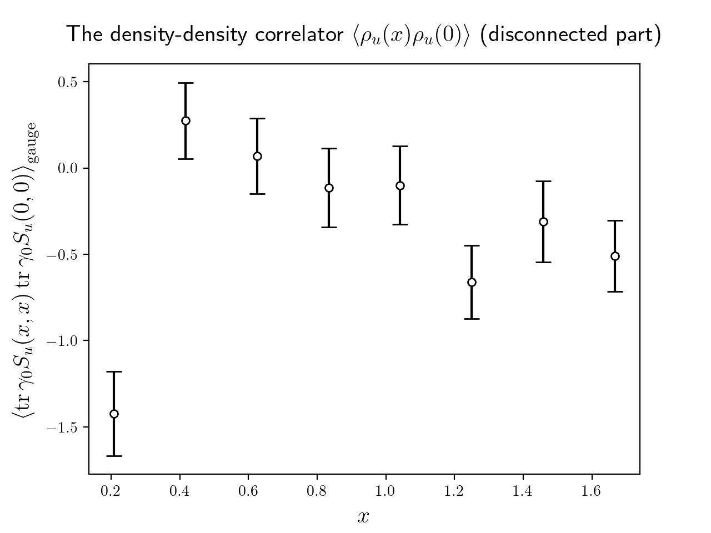

大阪大学 理学研究科 物理学専攻 原子核理論研究室
大和 寛尚
スライドのソースファイルはこちら
スライドを閲覧するにはこちらにアクセスしてください：
https://hironaok.github.io/tmp
クォーク・グルーオン多体系の相構造
格子上の場の理論
数値計算
結果と考察
格子化された QCD 作用
シミュレーション・パラメータ
| $T$ | $\beta$ | $\kappa$ | $c_\mathrm{SW}$ | Lattice size | Number of traj. |
|---|---|---|---|---|---|
| 0.76 $T_\mathrm{pc}$ | 1.50 | 0.143 480 | 0.143 480 | 32 ✕ 16² ✕ 4 | 5000 |
| 1.08 $T_\mathrm{pc}$ | 1.90 | 0.138 817 | 0.143 480 | 64 ✕ 16² ✕ 4 | 5000 |
| 2.07 $T_\mathrm{pc}$ | 2.20 | 0.135 010 | 0.143 480 | 128 ✕ 16² ✕ 4 | 5000 |
つまり，低温・擬臨界温度・高温の 3 つの温度でシミュレーションを行った．
